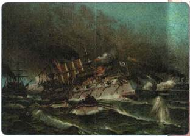
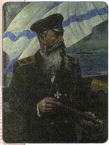
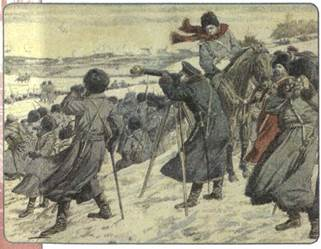
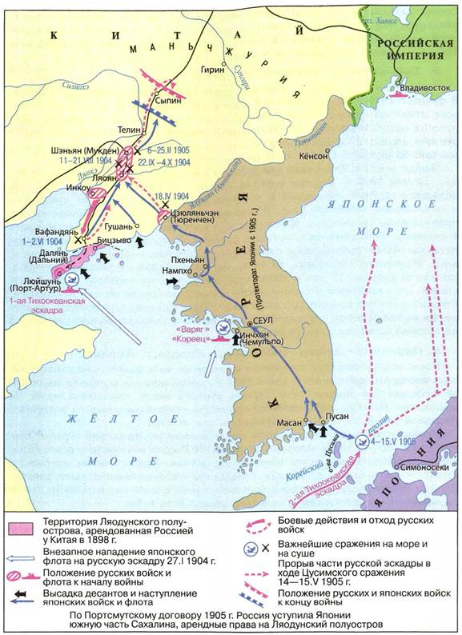
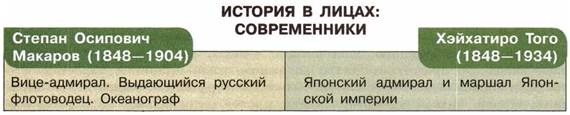

Почему дальневосточное направление внешней политики стало одним из важнейших в конце XIX — начале XX в.? Каковы были последствия поражения России в войне с Японией?
1. Основные направления внешней политики России на рубеже XIX—XX вв. Гаагская конференция
Внешняя политика Николая II в первый период его царствования была направлена на решение двух задач. Он стремился сохранить сложившееся положение и не допустить новых военных конфликтов в Европе, с одной стороны, и расширить сферу влияния России на Дальнем Востоке — с другой.
По инициативе Николая II в июне 1899 г. состоялась международная конференция в голландском городе Гааге. В ней приняли участие представители 26 стран Европы, Америки и Азии. Участники конференции взяли на себя обязательства не использовать удушливые газы; не применять снаряды, начинённые газом; не использовать разрывные пули. Был создан Гаагский международный суд для разбирательства конфликтов между государствами. Однако результаты конференции не соответствовали масштабным замыслам Николая II — первого государственного деятеля, поставившего вопрос о всеобщем разоружении.
2. Дальневосточная политика
Мир и спокойствие в Европе были нужны России для успешного выполнения «большой азиатской программы»; усиления собственных позиций в Восточной Азии.
Главным препятствием на пути к укреплению России на Дальнем Востоке была Япония, которая провозгласила и настойчиво претворяла в жизнь программу создания «великой Японии».
В 1896 г. Россия и Китай заключили секретный договор об оборонительном союзе. Китай разрешил России проложить через свою территорию Китайско-Восточную железную дорогу (КВЖД). Она была построена в 1897—1903 гг. и соединила Забайкалье с Владивостоком.
Китайско-русское сближение ревностно встретили в европейских столицах. Оно подхлестнуло захват китайских территорий другими странами. В 1897 г. Германия взяла под свой контроль порт Циндао. Россия не только не поддержала Китай, но и, в свою очередь, решила приобрести незамерзающий порт в Жёлтом море. Русские корабли вошли в Порт-Артур — важный стратегический пункт на Ляодунском полуострове.
В мае 1898 г. Китай и Россия подписали договор о безвозмездной аренде на 25 лет Ляодунского полуострова и Порт-Артура с правом создания там российской военно-морской базы.
Военное присутствие России в Китае вызвало резкое неприятие со стороны Японии. Тайную поддержку ей оказывали США и Англия, не заинтересованные в усилении российских позиций на Дальнем Востоке. Они предоставили Японии кредиты, организовали поставки металла, нефти, оружия, военных судов, всячески подталкивая её к войне с Российской империей.
В январе 1903 г. Николай II созвал совещание по делам Дальнего Востока. Большинство высших чиновников считали необходимым начать ускоренную подготовку к войне. Особое мнение высказал С. Ю. Витте. В 1902 г. он совершил поездку на Дальний Восток и пришёл к выводу, что Россия к войне не готова. Витте предлагал начать широкое экономическое освоение Дальнего Востока.
3. Начало Русско-японской войны
В ночь на 27 января 1904 г. без объявления войны японские корабли атаковали русскую эскадру, стоявшую на внешнем рейде Порт-Артура. Два броненосца и один крейсер получили серьёзные повреждения. Утром того же дня в нейтральном корейском порту Чемульпо японская эскадра в составе 14 кораблей напала на крейсер «Варяг» и канонерскую лодку «Кореец». Завязался неравный бой. Сильные пробоины и начавшийся на судне пожар помешали «Варягу» пробиться в Порт-Артур. Не желая спустить боевой флаг перед врагом, русские моряки потопили крейсер, а канонерскую лодку взорвали.
Японский план войны предусматривал в качестве основной задачи добиться превосходства на море. Её решение гарантировало успех операций по высадке десанта на суше и последующему захвату территорий Маньчжурии, Приморского и Уссурийского краёв.

Чемульпо. Крушение «Варяга» и «Корейца»

С. О. Макаров
В феврале в Порт-Артур прибыл новый командующий Тихоокеанским флотом вице-адмирал С. О. Макаров, который развернул активные боевые действия. Но 31 марта случилась трагедия: в бою наскочил на мину флагманский броненосец «Петропавловск». Вместе с адмиралом Макаровым погиб весь его штаб, 29 офицеров и 652 матроса, а также знаменитый художник-баталист В. В. Верещагин.
4. Осада Порт-Артура
В феврале 1904 г. 1-я японская армия высадилась в Корее и в середине апреля перешла границу Маньчжурии. В неравном бою у города Тюренчена русские войска потерпели поражение и отступили к городу Ляояну.
В апреле на Ляодунском полуострове, в тылу Порт-Артура, десантировалась 2-я японская армия. Противник захватил порт Дальний, превратив его в плацдарм для наступательных операций на Порт-Артур. В августе 1904 г. японские войска нанесли форсированный удар по Порт-Артуру, но встретили упорное сопротивление. Потеряв треть своего состава, они прекратили штурм и перешли к осаде крепости. Началась осада Порт-Артура, длившаяся с июля по декабрь 1904 г.
Японское командование решило направить основные силы на разгром русских сухопутных войск в районе Ляояна.
В августе 1904 г. три японские армии атаковали русские позиции, но натолкнулись на ожесточённое сопротивление и понесли огромные потери. Командующий Маньчжурской армией А. Н. Куропаткин решил перейти в наступление на восточном фланге. Если бы он осуществил это намерение, то японской армии, возможно, было бы нанесено поражение. Однако в последний момент Куропаткин решил не рисковать и отдал приказ об отступлении на север, к городу Мукдену.
В октябре 1904 г. из Балтийского моря на помощь осаждённым в Порт-Артуре вышла 2-я Тихоокеанская эскадра под командованием адмирала
З. П. Рожественского. Ей предстояло обогнуть Африку и Азию и пробиться к Порт-Артуру или Владивостоку.
В ответ японцы активизировали свои действия в районе Порт-Артура. Героизм, мужество, упорство русских защитников вызывали восхищение даже у японцев. В декабре погиб начальник сухопутной обороны крепости талантливый генерал Р. И. Кондратенко. Командующий войсками генерал А. М. Стессель созвал Совет обороны крепости. Большинство членов

Эпизод сражения под Мукденом

Русско-японская война 1904—1905 гг.
Совета высказались за продолжение обороны, считая, что имеются как материальные, так и людские ресурсы, а самое главное — высокий патриотический подъём солдат и матросов, готовность стоять до конца. Но 20 декабря 1904 г. Стессель сдал крепость японцам.
5. Ход военных действий в 1905 г.
С падением Порт-Артура японские части были переброшены под Мукден. В феврале 1905 г. преимущество и инициатива полностью оказались на стороне японской армии, которая попыталась осуществить двусторонний охват русских войск. После ожесточённых боёв возникла угроза полного окружения русской армии. 22 февраля Куропаткин отдал приказ о немедленном отступлении. 25 февраля 1905 г. японцы заняли Мукден.
Между тем 2-я Тихоокеанская эскадра совершала свой беспримерный поход. 14 мая 1905 г. русские корабли вошли в Цусимский пролив. Здесь их поджидал отремонтированный и переоснащённый современными приборами и артиллерией японский флот. В завязавшемся бою сразу же обнаружилось превосходство противника. Менее чем через час вышел из строя флагманский броненосец, Рожественский получил ранение. К концу дня русская эскадра потеряла четыре броненосца и один крейсер, остальные корабли были повреждены. Миноносец «Бедовый», на борту которого находился раненый адмирал, захватили японцы. 15 мая погибли ещё шесть русских кораблей. Семь броненосцев, пять крейсеров и четыре эсминца были затоплены своими командами. Русский флот фактически был уничтожен. Цусима стала героической, но в то же время трагической страницей русской военной истории, больно ударившей по национальной гордости народа.
6. Окончание войны. Сближение России и Англии
После оглушительного поражения на море на всём фронте наступило затишье, ненадолго прерванное в июне 1905 г., когда японцы высадили на острове Сахалине две дивизии. Регулярных русских войск здесь было мало. На помощь им пришли добровольные ополчения, сформированные из каторжан. Неравная борьба за остров продолжалась два месяца.
Необходимость заключения мира стали осознавать не только страны, втянутые в войну, но и все мировые державы. В России разгоралась революция, катализатором которой стали военные поражения. Правительство всё больше нуждалось в помощи армии для подавления революционных выступлений. Японии победы дались слишком большой ценой: страна находилась на грани экономического истощения и не могла продолжить войну.
Европейские державы и США были обеспокоены чрезмерным усилением Японии на Дальнем Востоке. Они считали недопустимым и дальнейшее ослабление России. Сильный соперник в Тихом океане им был не нужен ни в лице России, ни в лице Японии.
Посредником в переговорах о мире по настойчивой просьбе Японии выступил президент США Т. Рузвельт. Переговоры проходили в небольшом приморском городке Портсмуте (США). Главой русской делегации был назначен С. Ю. Витте. 23 августа 1905 г. Россия и Япония подписали Портсмутский мирный договор. Россия признала Корею сферой японских интересов. Обе стороны обязались вывести свои войска из Маньчжурии. Россия уступала Японии южную часть острова Сахалина и права на аренду Порт-Артура. Она обязалась предоставить японцам право рыболовства вдоль русских берегов в Японском, Охотском и Беринговом морях.
Россия потерпела в войне с Японией поражение. Оно было обусловлено её неподготовленностью к войне, трудностями переброски войск и снаряжения на Дальний Восток. Самым отрицательным образом на ходе военных действий сказались и недооценка сил соперника, и ошибки командования. Россия оказалась в дипломатической изоляции. Англия и США заняли прояпонскую позицию, Франция провозгласила нейтралитет и не поддержала своего союзника — Россию.
После подписания Портсмутского мира центр внешней политики Российской империи вновь переместился в Европу. Перемены в первую очередь затронули англо-российские отношения. Политика «блестящей изоляции» была прервана Англией в 1904 г. заключением «сердечного согласия» с Францией, союзницей России. Столь радикальный шаг был вызван усилением Германии, особенно её курсом на создание мощного военно-морского флота. Англия начала искать пути сближения с Россией. Переговоры закончились подписанием в августе 1907 г. в Петербурге соглашения о разграничении интересов в Иране, Афганистане и Тибете. Этот договор окончательно закрепил раскол Европы на два противостоящих военно-политических блока: Тройственное согласие, или Антанту (Россия, Франция, Англия), и Тройственный союз (Германия, Австро-Венгрия, Италия).

ПОДВЕДЁМ ИТОГИ
На рубеже веков во внешней политике России происходит усиление внимания к дальневосточному направлению. Последствия этой политики носили противоречивый характер. Русско-японская война стала одной из предпосылок назревания внутриполитического кризиса в стране.
Вопросы и задания для работы с текстом параграфа
1. Какие цели преследовала внешняя политика России в начале царствования Николая II? 2. Каково было значение Гаагской мирной конференции? 3. В чём состояли причины Русско-японской войны? 4. Почему Россия потерпела поражение в войне с Японией? 5. Каковы были условия Портсмутского мира? 6. Какую позицию занимали ведущие мировые державы в период Русско-японской войны?
Работаем с картой
1. Покажите на карте Маньчжурию, Ляодунский полуостров, Порт-Артур, Чемульпо, Владивосток, КВЖД. 2. Покажите на карте места главных сражений Русско-японской войны на суше и море.
Думаем, сравниваем, размышляем
1. Составьте хронологическую таблицу «Основные события Русско-японской войны». 2. Можно ли утверждать, что одним из итогов Русско-японской войны стало создание Антанты? 3. Используя текст параграфа, подготовьте от имени участника событий краткую заметку для газеты об одном из эпизодов войны 1904—1905 гг. Заметка должна носить патриотический характер. 4. Объясните с учётом геополитических интересов России важность и значение Порт-Артура для российской армии и флота.